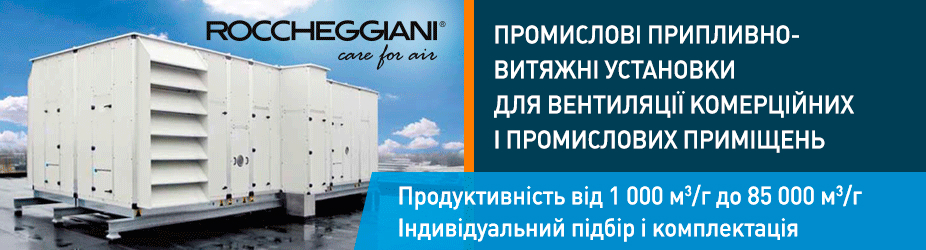

Системи управління вентиляційними агрегатами
Системи управління вентиляційними агрегатами – це невід’ємна складова будь-якої вентиляційної системи необхідна для функціонування обладнання. Автоматика до обладнання часто пропонується самим виробником при комплектації вентиляційних агрегатів. Придбання комплексних рішень від заводу виробника має як позитивні так і негативні сторони. Всі системи автоматичного управління вентиляційними установками в заводському виконанні мають найчастіше дещо не звичну для наших фахівців Кіпа елементну базу і в 99% випадків вся документація на мові країни виробника, так само часто програмне забезпечення також має свої особливості, але це більше стосується традицій побудов подібних систем .
Щит автоматики (h2)
Системи автоматичного управління, а в побуті «шафа автоматики» часто доцільніше використовувати спроектований і виготовлений місцевими фахівцями, компанія Алянс Ейр виготовляє всі системи управління до вентиляційних агрегатів виготовляє самотужки, отримавши при цьому значно нижчу вартість в порівнянні з імпортом і відповідно надаючи клієнтові краще адаптований до умов експлуатації в наших реаліях. Як наслідок клієнт отримує дешевший продукт без втрати якості і функціонала.
Всі системи автоматичного управління поставляються з нашим обладнанням гарантовано мають можливість до підключення до існуючої на об’єкті системою диспетчеризації на основі будь-якого SCADA продукту встановленого у клієнта на предпріятіі. Модернізація в такому випадку шафи управління не потрібно. Всі системи автоматичного управління укомплектовані вільно програмованими контролерами, в залежності від побажання замовника, імпортного або вітчизняного виробництва.
Якість систем автоматизованого управління (h3,h4)
Вся електротехнічна продукція використовується нами виключно імпортного виробництва, і вибір базових брендів для комплектації шаф автоматики це баланс ціна якість який напрацьовувався не один рік. Наші фахівці також готові запропонувати комплексний проект з проектування, монтажу, пусконалагодження системи автоматичного управління всього спектра вентиляційного і холодильного обладнання з об’єднанням в єдину систему диспетчеризації розробленої індивідуально.
Вся електротехнічна продукція використовується нами виключно імпортного виробництва, і вибір базових брендів для комплектації
- Чилер Thermocold DOMINO XEA II (серія C)
- Канальні фанкойли
- Тепловий насос від виробника Thermocold AWA HP XEA
- Інверторний тепловий насос MAXA I-HP LT
- Чилер Thermocold DOMINO XEA II (серія C)
- Канальні фанкойли
- Тепловий насос від виробника Thermocold AWA HP XEA
- Інверторний тепловий насос MAXA I-HP LT